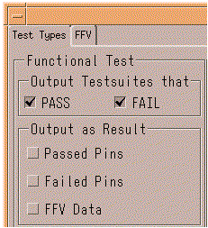

Functional test settings
The settings you can make for a functional test are divided into two groups:
- Output Testsuites that
- Output as Result

Settings in the "Output Testsuites that" group
The checkboxes of this group let you specify for what kinds of functional tests you want test suite data: passed, failed, both, or neither.
The example below shows typical output for a test suite that performs a functional test. Result data is not included.
========== Started Testsuite func_test =========================== Executed Testmethod functional on Site 1: PASSED Equation Set 1; Timing Set 1; Spec Set 4 Equation Set 1; Levels Set 1; Spec Set 1 Startlabel: alternating ========== Ended Testsuite func_test =============================
Settings in the "Output as Result" group
The checkboxes of this group (see the figure above) let you specify for which pins (passed and/or failed pins) you want result data to be included in the report, and whether you want first failing vector (FFV) information to be added to the report. See Settings on the FFV tab for a description of the special settings you can make for FFV.
The result data appear in the Pin Results section in the generated report.
The following example shows the output of the Event Formatter for a test suite which runs a functional test, when the Passed Pins and Failed Pins checkboxes are both on (and FFV is off).
========== Started Testsuite ftest_repeat =======================
Executed Testmethod functional on Site 1: FAILED
Equation Set 1; Spec Set 3; Timing Set 1
Equation Set 1; Spec Set 1; Levels Set 1
Startlabel: repeat_alternating
---------- Pin Results: -----------------------------------------
out FAIL
a2 PASS
a1 PASS
a0 PASS
dbus10 PASS
dbus9 PASS
dbus8 PASS
dbus7 FAIL
dbus6 FAIL
dbus5 FAIL
dbus4 FAIL
dbus3 PASS
dbus2 PASS
dbus1 PASS
dbus0 PASS
========== Ended Testsuite ftest_repeat =========================Functional changes
- Introduced before SmarTest 6.3.2
- SmarTest 7.0.3: Removed memory_analysis and redundancy_repair functions